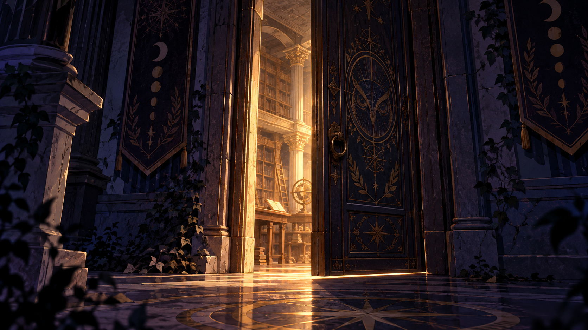

01horário não identificado
A Biblioteca Fora do Tempo
Quatro arquivos foram separados. A saída depende da pergunta que os une.
abrir o arquivoarquivo 03
este arquivo não estava aqui ontem.
ocorrências registradas
Alguns arquivos guardam respostas. Este parece estar guardando outra coisa.